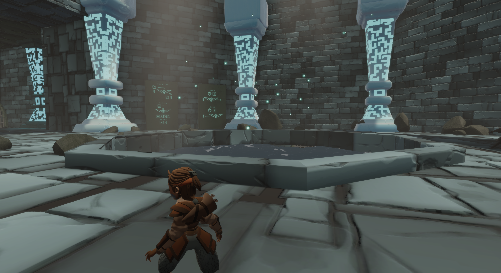
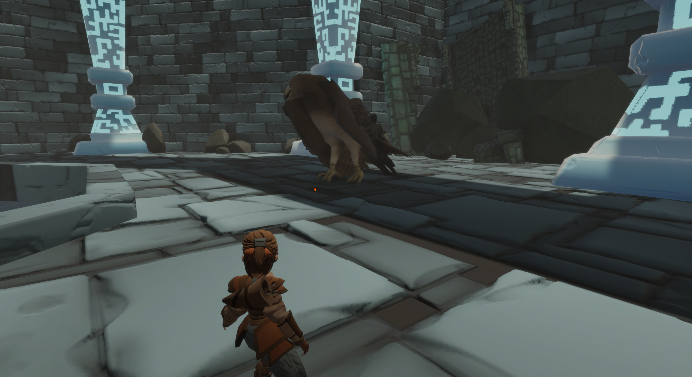

Anima
Anima is a third-person action-adventure game that focuses on the relationship between the player
character and an animal companion controlled by AI. The player takes the role of Nio, a young girl whose
village has been attacked by a powerful Empire. During the battle, Nio is abducted by one of the enemy’s battle
eagles, but they accidentally crash. Nio awakens to find herself in an unknown area next to the eagle, who
appears injured. The player must work together with the eagle to save Nio’s clan from a terrible fate, forming
a bond with the eagle in the process. Over the course of the game, the bond between Nio and the eagle grows,
while their individual abilities increase. This allows the pair to tackle progressively more demanding challenges
as they explore the game world.
Anima was created during a cooperation with UW Whitewater and HAN University from the Netherlands. Sadly due to the pandemic, this project had to become remote over the spring and summer in 2020. Nonetheless, I still was able to work along side the HAN students from the Netherlands, and we made good use of Jera to organize our project the best we could.
I was in one of two programming teams for this project. My team specifically worked on the character controls (Nio), where as the other team was focused on the Eagle mechanics. Most of my contributions were in the form of bug fixing for other programmers, However there were a few key mechanics that were created by myself and the other American programmer on the team.
Engine: Unity
Softwares Used: Jera, Git, Visual Studio
Languages: C#
Timeframe: 8 Weeks from April to June 2020
Status: Haitus
Anima was created during a cooperation with UW Whitewater and HAN University from the Netherlands. Sadly due to the pandemic, this project had to become remote over the spring and summer in 2020. Nonetheless, I still was able to work along side the HAN students from the Netherlands, and we made good use of Jera to organize our project the best we could.
I was in one of two programming teams for this project. My team specifically worked on the character controls (Nio), where as the other team was focused on the Eagle mechanics. Most of my contributions were in the form of bug fixing for other programmers, However there were a few key mechanics that were created by myself and the other American programmer on the team.
Engine: Unity
Softwares Used: Jera, Git, Visual Studio
Languages: C#
Timeframe: 8 Weeks from April to June 2020
Status: Haitus
My Contributions
Pressure Plate

The Pressure plate is one large key mechanic in Anima. Since you can control both Nio and her Eagle friend, some rooms and areas will have the need for the Eagle to hold down a pressure plate for Nio to walk forward, or vice versa. Some Pressure plates may open new areas for the two friends. Others may only open doors for one. The player will have to think about how to use the Eagle to their advantage.
Climbing
Climbing is a critial mechanic inside of Anima. At times the player will need to complete tasks on their own without the Eagle. Some places require the player to climb up a cliff or a wallside. The player may climb those walls by climbing on blue slabs as seen below. I was not the lead designer of this mechanic, but I did work closely with the lead designer to program it.

Draw Bridge
Some areas in Anima require a large rock or slab to fall to create a bridge to walk on for both Nio and the Eagle. This mechanic allows for either character to push that slab to create the bridge. In the code, I made it so that the map designer can decide either to make the slab pushable only by the Eagle, Nio, or both, which allows the map to have interesting functionality. Unfortunately due to time constraints, this mechanic was not used.

Various Pictures

